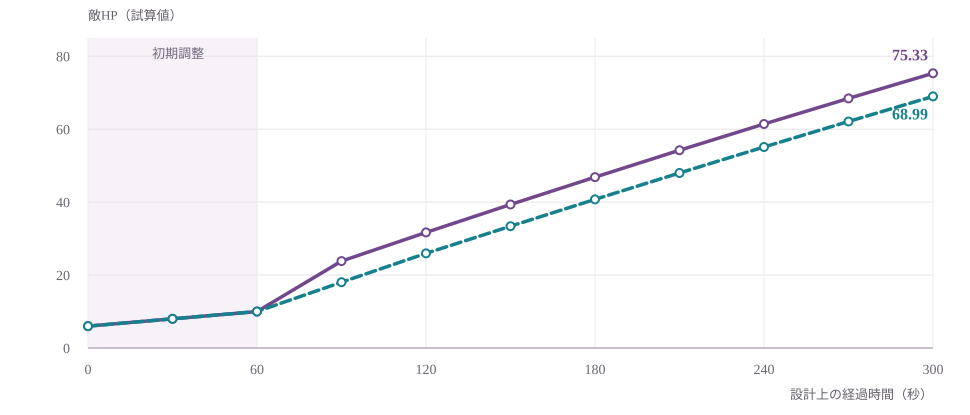
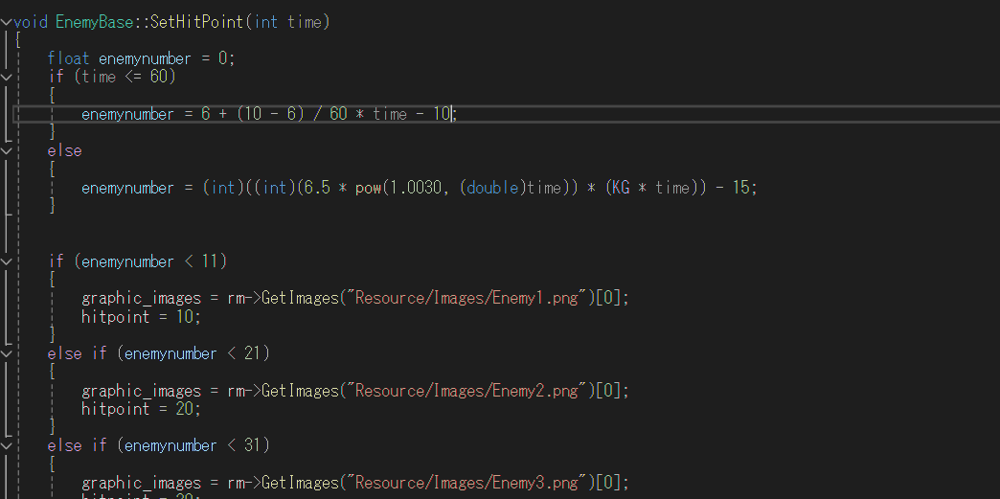

ゲーム概要
迫ってくる敵を避けながら自動攻撃で倒し、経験値で武器やスキルを強化する2Dサバイバー系ゲームです。初期企画では5分間を想定していましたが、後期のソースではクリア時間を3分に設定しています。
操作は主に移動。敵との距離や武器の攻撃範囲を意識して立ち回る体験を目指しました。
GAME PLANNING · GAME BALANCE
序盤は一撃で倒せる爽快感、終盤は押し寄せる敵の緊張感。武器性能・敵HP・出現頻度と方向を調整して、成長と難易度の両立を目指しました。
本人担当：企画、武器・敵の数値バランス、敵の出現制御の一部実装

00 / DESIGN AT A GLANCE
初期の手応えと、ゲームが進むほど厳しくなる状況を、数値と敵出現の両方から設計しました。
通常敵 / ゲーム序盤
HP 10敵のHPは開始時の実装値
初期武器 / 鞭 Lv.1
威力 10命中すれば初期敵を一撃で撃破
通常敵の耐久力
6段階HP10〜60と画像を対応づける
VIDEO GALLERY
作品の概要と、ゲームプレイの様子を動画で紹介しています。
INTRODUCTION
作品の紹介用動画です。
GAMEPLAY
ゲームプレイの記録です。
埋め込み動画が表示できない場合は、YouTubeリンクから確認できます。PDF版でもURLを参照できます。
TRIAL BUILD
採用担当者向けに、Windows向けの試遊版ビルドも掲載しています。動画とあわせて、序盤の敵処理や成長の流れを直接確認できます。
Google Driveで試遊版を見るhttps://drive.google.com/file/d/1g_y7519TK7OE9KfEnaHHcD4dzfxPhtEU/view?usp=drivesdk
01 / PROJECT
迫ってくる敵を避けながら自動攻撃で倒し、経験値で武器やスキルを強化する2Dサバイバー系ゲームです。初期企画では5分間を想定していましたが、後期のソースではクリア時間を3分に設定しています。
操作は主に移動。敵との距離や武器の攻撃範囲を意識して立ち回る体験を目指しました。
主担当：企画、武器の威力・クールタイム、敵HP・出現間隔・出現位置の調整、敵出現ロジックの一部、全体バランス。
その他：主人公のドット絵・アニメーション、リザルト、武器アイコン、タスク管理、デバッグ・演出面の品質確認などを分担しました。

02 / DESIGN QUESTION
課題は敵HPをただ増やすことではなく、育成の成果を感じながら終盤も緊張感を保てる難易度曲線を作ることでした。
序盤は鞭1発で通常敵を倒せる手応えを重視。実装では通常敵HP10に対し、初期鞭の威力を10にしています。
威力÷クールタイムだけでなく、鞭やEMPの命中条件、特定武器への集中強化と分散育成の違いを考慮しました。
時間経過に合わせて敵HP・生成間隔・出現位置を調整し、終盤の難易度を単純なHP増加だけに依存させない構成を目指しました。
03 / DESIGN EXPLORATION
2025年の設計検討では、初期武器・命中率・育成方針を条件として指定し、生成AIを計算補助に使って複数の案を比較しました。
チャット内の試算値。完成版の実測値・採用済み数値ではありません。

1武器へ強化を集中した場合と、複数武器を均等に育てた場合を想定し、敵を倒せる手応えと、終盤の敵の物量に対抗できる火力を検討しました。
命中率・レベルアップ速度などには仮定があります。図は設計案を比較するための試算であり、最終ゲームの性能や撃破時間を測定したものではありません。
04 / IMPLEMENTATION
試算した曲線をそのまま採用せず、時間に応じて通常敵のHPと見た目を切り替える構成にしました。
通常敵のHP（実装コードから確認）
HPの段階ごとに敵の画像も切り替えます。「同じ見た目なのに同じダメージで倒せないのは違和感がある」という指摘を踏まえ、強さを見た目から理解しやすくすることを意識しました。
序盤の成立条件 / ソース確認
初期鞭の攻撃力は10、序盤の通常敵HPは10です。命中すると攻撃力分だけHPが減り、0以下になると撃破されます。ただし、命中までの時間は敵との距離や攻撃タイミングで変わります。

EnemyBase::SetHitPoint() の実装（スクリーンショット）序盤のHP計算には整数除算が含まれるため、初期検討の「HP6から10へ滑らかに増加」とは一致しません。上記の「HP10」は完成版コードの分岐処理から確認できる値です。経過時間ごとの敵HPを実測したデータではありません。
設計案との違い：試算したβ=0.02／0.05のHP曲線は最終実装には採用されていません。実装ではHPを6段階に分類しています。
企画当時のExcelと、GitHubの各武器クラスにあるLv.1設定を照合しました。同じ武器でも値が異なるため、企画案を固定せずに調整したことが分かります。ただし、各変更の日時や理由を確定できる資料ではありません。
| 武器 | 企画時（Excel） | GitHub mainのLv.1 | 確認できる変更 |
|---|---|---|---|
| 鞭 | 威力10 / CT 2秒 | 威力10 / CT 2秒 | 基礎値は共通 |
| 杖 | 威力3 / CT 1秒 | 威力5 / CT 1秒 | 基礎威力を変更 |
| EMP | 威力2 / CT 0.8秒 | 威力2 / CT 1.5秒 | 攻撃頻度を変更 |
| ゴム弾 | 威力7 / CT 3秒 | 威力10 / CT 8秒 | 威力・頻度を変更 |
※ CTはクールタイム。効果範囲・同時発射数・命中率も実際の攻撃性能に影響するため、威力÷CTのみで武器間の優劣を断定していません。
05 / ENEMY SPAWNING
通常敵の生成間隔を短くするだけでなく、発生方向に重みを付けて戦況が変わるようにしました。
時間経過に応じて通常敵の生成間隔を段階的に短縮し、一定間隔の増援隊列も設定しました。敵の増え方で終盤の緊張感を作る意図です。
実装には、通常敵を1回につき3体生成する設定があります。
画面周辺の9エリアから出現方向を選び、初期は左右を重点化。直前に使ったエリアの重みを下げることで、同じ方向に偏り続けるのを抑えています。
位置を完全な一様乱数にせず、囲まれ方に変化を付ける設計です。

06 / REFLECTION
「成長で強くなる実感」と「終盤の緊張感」という体験上の目標から逆算して、武器・敵HP・出現条件の数値を検討しました。
また、耐久力が変わるなら敵の見た目も変えるなど、数値をプレイヤーにどう伝えるかまで設計する重要性を学びました。
特化型・分散型ごとの平均撃破時間、クリア率、実際の命中率を揃えた比較テストは実施していません。試算と完成版コードの数値にも違いがあります。
そのため、数値設計の判断過程と実装できた仕様を示し、狙いどおりのバランスを定量的に実証したとは主張していません。
設計時資料：ヴァンサバ仕様リスト.xlsx、2025年4〜5月の武器DPS・敵HPに関する本人の相談記録（計算補助として生成AIを使用）。実装確認：kbc_tgs2025_4gati の main（EnemyBase.cpp、EnemyManager.cpp/.h、各武器 SetStatus()）。
設計時の試算値はプレイテストで測定した数値ではありません。